# Overview
<p>This user guide will walk through the necessary steps to have basic Out of Box Demo configuration commands be hard coded to the EVM. Hard Coded Configuration will be abbreviated in this user guide with HCC. <br> <br> </p>
<p> The configuration commands for many mmWave radar labs are normally sent over UART to the EVM. The configuration commands are stored in a separate text file and sent at startup, but this requires a PC connection and manual user control steps. It can be very helpful to have these configuration values 'hard coded' so the device will boot, configure, chirp, and output data immediately when powered up without further manual setup from the user. <br> <br> </p>
[[y! Previous Hard Coded Configuration User Guide
The older version of this User Guide can be found in the Industrial Toolbox 4.9 in the Out of Box Demo folder under Labs.
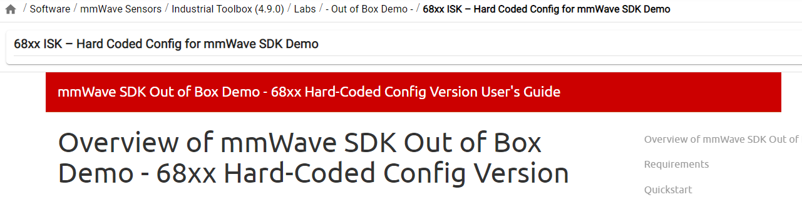
]]
# Quickstart
## Prerequisite
[[y! Run Out of Box Demo
Before continuing with this lab, users should first run the out of box demo for the EVM. This will enable users to gain familiarity with the sensor's capabilities as well as the various tools used across all labs in the mmWave Industrial Toolbox. ]]
## 1. Software Requirements
Tool | Version | Download Link
----------------------------|---------------------------|--------
TI mmWave SDK | 3.5.x.x | [Link to Latest mmWave SDK](http://software-dl.ti.com/ra-processors/esd/MMWAVE-SDK/latest/index_FDS.html). To access a previous version of the mmWave SDK scroll to the bottom of the table and click the link under "MMWAVE-SDK previous release". Repeat to continue stepping back to previous versions.
mmWave Industrial Toolbox | Latest | Download and install the toolbox. Go to [Using TI Resource Explorer & the mmWave Industrial Toolbox](../../../../docs/readme.html) for instructions.
Code Composer Studio | Latest | [Code Composer Studio](https://www.ti.com/tool/CCSTUDIO)
Terminal Emulator | Latest | [TeraTerm](https://ttssh2.osdn.jp/index.html.en) or another terminal emulation software to ensure proper data streaming upon device bootup. The instructions provided in this user guide are based on [TeraTerm](https://ttssh2.osdn.jp/index.html.en)
## 2. Flashing the EVM
A prebuilt binary setup for HCC for the Out of Box Demo has already been generated and has the configuration commands from the profile_3d.cfg file stored inside the cli.c file alongside additional code overhead.
Detailed steps can be found in the later Developer's Guide section of the user guide on how to create this modified cli.c file and the integration steps needed.
Please find the prebuilt binary file <b> xwr68xx_mmw_demo_hcc.bin </b> in the below directory and flash it onto the EVM.
`<mmWave Industrial Toolbox Install Path>/labs/Fundamentals/Hard_Coded_Config/prebuilt_binaries/xwr68xx_mmw_demo_hcc.bin`
## 3. Checking HCC Functionality with Tera Term Data Stream
To check that the EVM has been configured correctly, set the EVM to functional mode after flashing. Power up the device and connect the EVM's Data COM port to a Tera Term Instance to receive the EVM's data stream.
### 1. Launch the UART Terminal
* Open one TeraTerm Instance and connect it to the COM port corresponding to the Data UART from the Flash the EVM section as described below:
* DATA UART = XDS110 Class Auxiliary Data Port
* **TeraTerm (Data UART):** Go to **Setup → Serial Port** dialog and enter the COM Port number for the Data UART Port and select the speed and other settings as shown below and press OK.
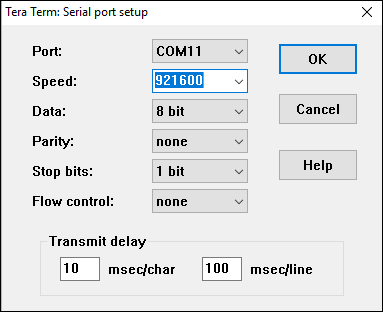
### 2. Observe the Sensor's Data Stream
{{y
Initially, the data stream will appear as a long series of characters. To view a more coherent data stream, enable [debug mode](https://ttssh2.osdn.jp/manual/4/en/setup/teraterm-term.html) within the TERATERM.ini configuration file and change the output to hex mode. Once debug mode is configured properly, pressing Shift+Esc will enable debug mode and adjust the output to a readable format. Refer to the [Tera Term setup webpage](https://ttssh2.osdn.jp/manual/4/en/setup/teraterm.html) for more information
}}
* Power cycle the EVM by pressing the NRST button. The EVM will immediately begin outputting UART stream data to the terminal instance in a hexadecimal format. This indicates that the sensor was successfully configured. Refer to the [OOB Output Guide](../../../Out_Of_Box_Demo/docs/understanding_oob_uart_data.html) to understand how to interpret the output data values.
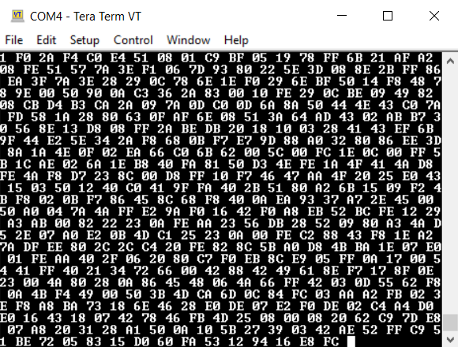
## 4. Running the EVM in the Visualizer GUI
Now that the EVM has been configured for HCC, the normal Visualizer GUI implementations will not work because the send configuration button will attempt to still send configuration commands to the EVM and will mess up and block any other additional threads to start the GUI.
The People Counting Visualizer GUI has updated configuration control buttons to be compatible with the EVM with HCC or without HCC. The mmWave_People_Counting_GUI.exe can be found in the below directory.
`<mmWave Industrial Toolbox Install Path>/labs/People_Counting/Visualizer/mmWave_People_Counting_GUI.exe`
Ensure that the Config Type is set for SDK Out of Box Demo.
Press the <i> Select Configuration </i> button and load the configuration data for use with the GUI setup. This step does not send the configuration or interact with the EVM and is mainly used to configure GUI settings. Then press the <i>Start without Send Configuration</i> button and the GUI will function like normal.
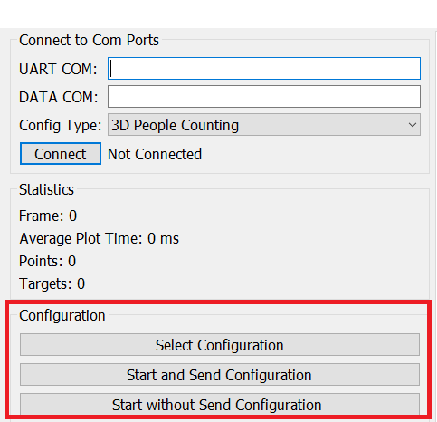
The Visualizer GUI will start to run like normal and you may notice the Frame count Statistic is non zero because the EVM has already started running on power up before a connection to the GUI is made.
This concludes the Hard Coded Configuration User's Guide setup with the Out of Box Demo.
# Developer's Guide
## 1. Editing the cli.c File
<p>The normal approach to send the configuration commands is to have a separate text file that will be sent through CLI (command line interface). Instead of using the separate text file, the commands will be stored inside an existing file called cli.c which houses CLI utility functions and implementations. The cli.c file will be part of the Out of Box Demo project and be included in the generated binary file that will be flashed to the EVM. <br> <br> </p>
The setup of the EVM device and CLI has the following simplified flow.
<b> initTask --> CLIInit --> CLI_open </b>
<p> <br> The general initialization task calls the CLIInit function. At the end of this CLIInit function, the CLI is opened to receive commands. However, at this point there are still other initializations that need to happen before the device is ready to start. The cfg parameters cannot be set directly after this CLIInit function but instead should be added to the CLI_task() in cli.c. <br> <br> </p>
### Steps
Note that a copy of the cli.c file containing all of the following code additions can be found here and is already setup.
`<mmWave Industrial Toolbox Install Path>/labs/Fundamentals/Hard_Coded_Config/src/hcc_cli.c`
The below example uses the default configuration commands from the profile_3d.cfg file found here but you can add in whatever configuration commands you would like.
`<mmWave SDK location>/packages/ti/demo/xwr68xx/mmw/profiles/profile_3d.cfg`
<ol>
<li style="margin-bottom: 10px;">Navigate to the cli.c file located in the following path in the SDK folder. `<mmWave Industrial Toolbox Install Path>\packages\ti\utils\cli\src` </li>
<li style="margin-bottom: 10px;">Add "#define USE_HARD_CODED_CONFIG" to the top of the file. (You can use any macro name you like)</li>
<li style="margin-bottom: 10px;">Add a char array of all the config parameters as they would appear in the .cfg file. Use '#ifdef USE_HARD_CODED_CONFIG' to enable turning off HCC functionality in the future if desired. Include an integer variable for looping through the cfg parameters. </li>
<li style="margin-bottom: 10px;">Include an identifier to signal the end of the commands inside the array with a '!' or other character not used in the cfg parameters.
e.g. "!!!END_OF_HARD_CODED_COMMANDS"</li>
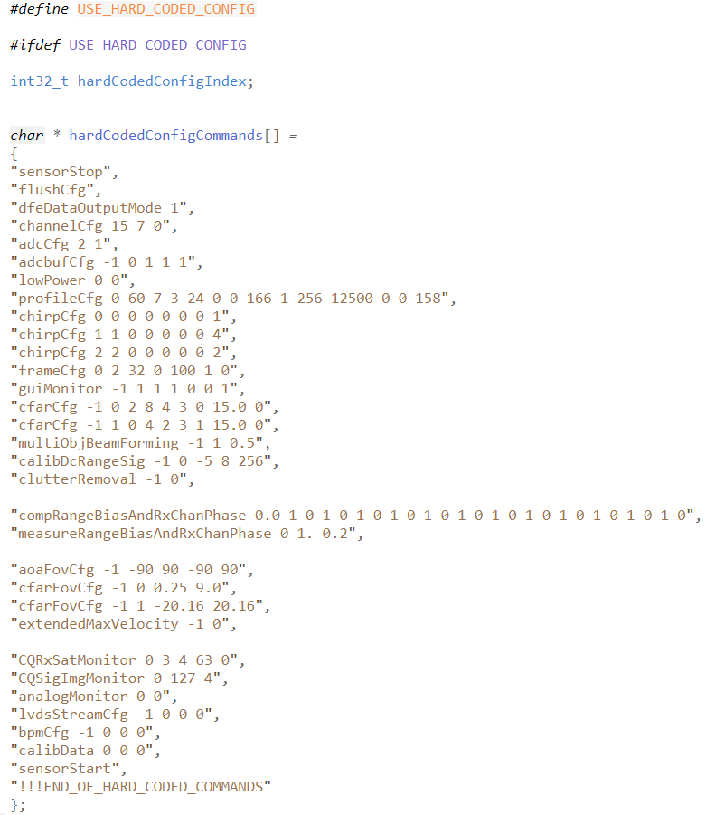
<li style="margin-bottom: 10px;">Inside CLI_task() and before the while(1) loop you need to add a section to pause the task for further system initialization. Include some UART prints for clarity if desired.</li>
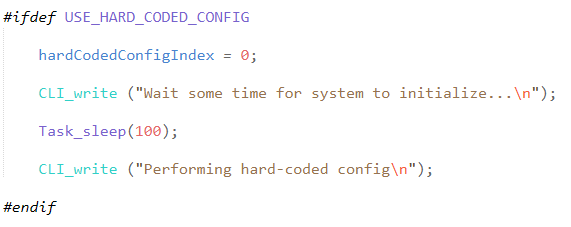
<li style="margin-bottom: 10px;">Inside the while(1) loop, add the loop to read in the char array of cfg parameters added at the top of the file. This replaces the UART_read line that would get the cfg parameter from the UART connection. Bypass this with a #ifdef/#else to revert to the UART communication if HCC is turned off. </li>
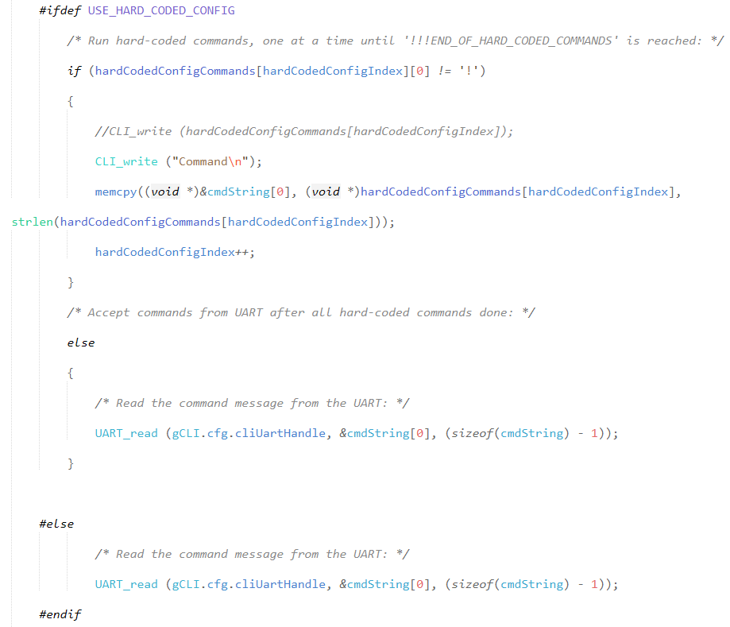
</ol>
## 2. Building Flash Binary with HCC Implementation
<p> There are two methods (A and B) for building the flash binary with HCC. Within Method A there are two submethods that will be explained. <br> </p>
### Method A.1 (Using Projectspec File)
This method is simpler to implement but will involve unlinking the Out of Box Demo project from CLI files and libraries. The edited cli.c file and supporting files will be loaded directly into the Out of Box Demo project in CCS and will not affect any other project.
<b> Note: </b>This first explanation assumes the use of the projectspec files while there will be an additional section explanation on how to modify an existing project to work with HCC manually.
The project spec files when imported into Code Composer Studio (Abbreviated as CCS) will automate the unlinking and direct loading of the edited cli.c file from above step.
If you wish to change anything different from the above steps you will need to replace the hcc_cli.c file found in the below path with your new file.
`<mmWave Industrial Toolbox Install Path>/labs/Fundamentals/Hard_Coded_Config/src/hcc_cli.c`
If the edited cli.c file name was changed from hcc_cli.c you will need to update the name in the mss project spec file.
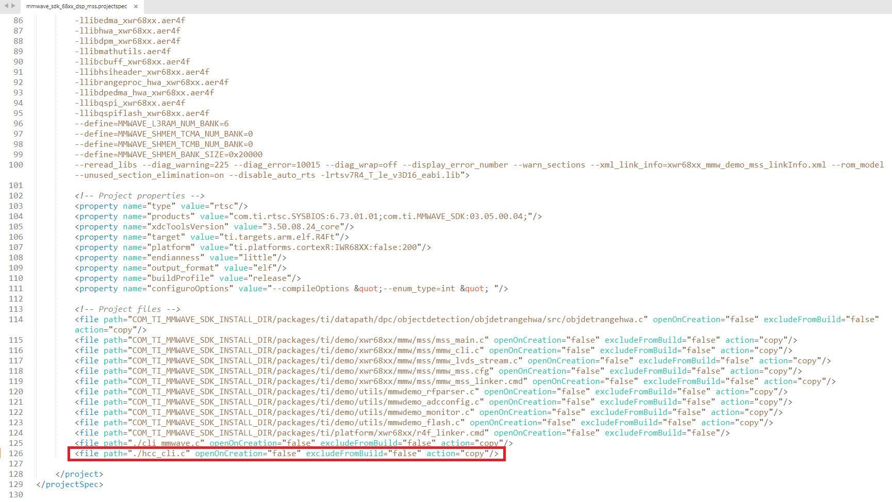
Make sure that you undefine and disable hard coded config settings in the edited cli.c file from "MMWAVE_SDK_INSTALL_PATH\packages\ti\utils\cli\src" so that it does not affect any other projects in CCS.
Open up the project spec files for both the MSS and DSS in CCS that can be found here.
`<mmWave Industrial Toolbox Install Path>/labs/Fundamentals/Hard_Coded_Config/src`
Take note that the following two files are present in the MSS project.
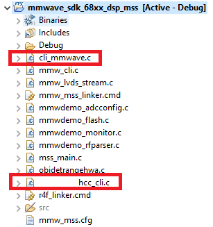
<p> Rebuild the rebuild the DSS project and then the MSS project and then flash the newly generated binary onto the EVM.<br> <br> </p>
### Method A.2 (Editing an Existing CCS Project for HCC)
To understand the manual steps involved, the following explains in detail how to modify an existing project to make it compatible with the newly edited cli.c file from the above step.
Right click the specific project and choose the "Add File" button and a separate window will pop up. Make sure to click copy files so the files are directly inside the project and not linked. Add your edited cli.c file as well as the cli_mmwave.c file which can be found here.
`<mmWave Industrial Toolbox Install Path>/labs/Fundamentals/Hard_Coded_Config/src`
Note that if you want to make any additional changes, make sure you are making it to the correct cli.c file inside the project in CCS.
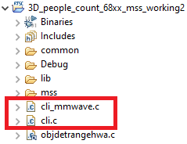
Now right click the mss project you are working on and click properties. On the left side you should see on the left drop menu Arm Linker and then File Search Path. In this method the specific library cli file will be unlinked as well as the cli library folder path in general so the project only uses the inserted cli.c file. In the below image are the two highlighted items that need to be deleted from the File Search Path.
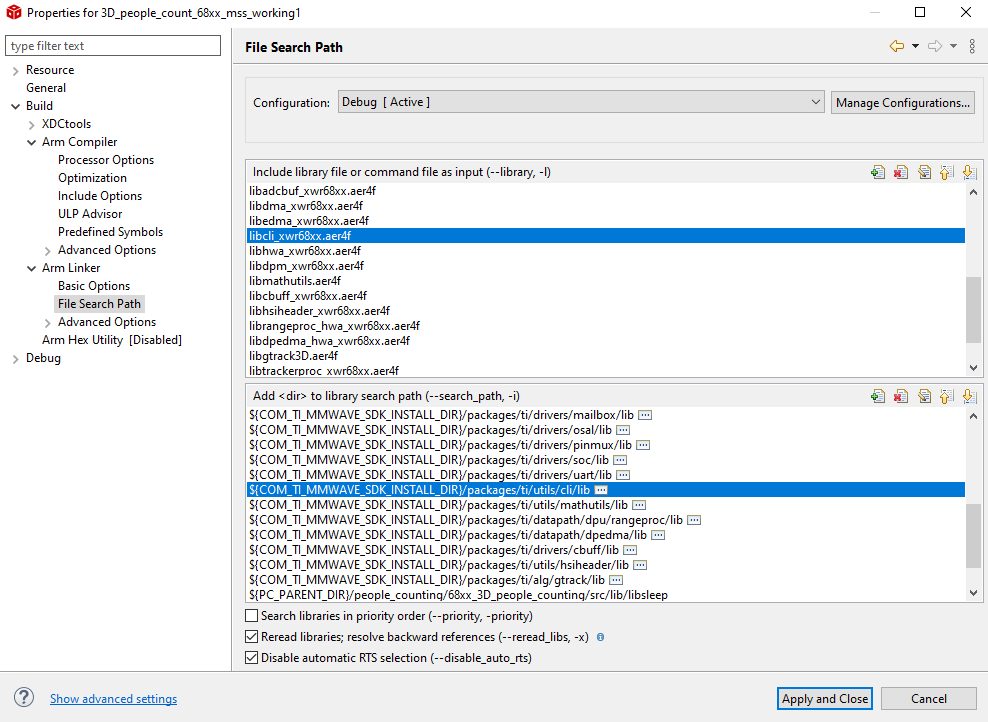
<p> Rebuild the rebuild the DSS project and then the MSS project for the Out of Box Demo Project in CCS and then flash the newly generated binary onto the EVM. <br> <br> </p>
### Method B
This method will recompile the CLI driver in the SDK and maintain path linking with CLI. Because the cli.c file is in the SDK folder, anytime a project that is also linked to the same SDK folder is rebuilt in CCS, it will utilize the same edited cli.c file. Since many labs will use different configuration commands, you may need to edit and double check correct settings in the cli.c file everytime projects are rebuilt in CCS which may be inconvenient.
The first steps will involve first recompiling the cli drivers as outlined in the SDK user guide section "Developing Using SDK".
After all initial settings are configured, the first step is to go to the SDK folder and setup the environment by going to the following path (MMWAVE_SDK_INSTALL_PATH\packages\scripts\windows)and running the "setenv.bat" command. You should see the <i> "mmWave Build Environment Configured" </i> message after the command is done.
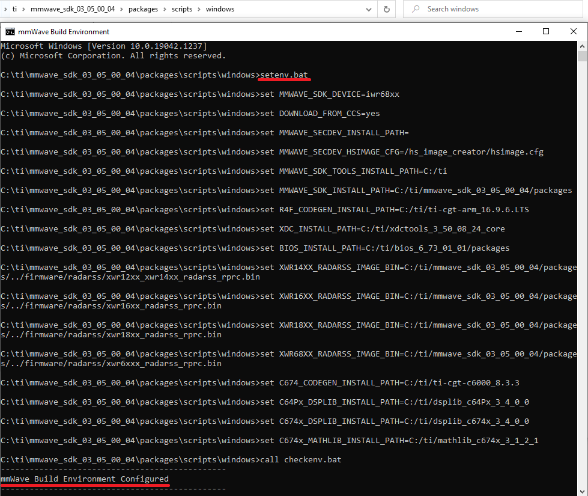
The next step will be to go to the CLI folder in the SDK folder and rebuild by running <i> "gmake clean" </i> and <i> "gmake all" </i> as shown below.
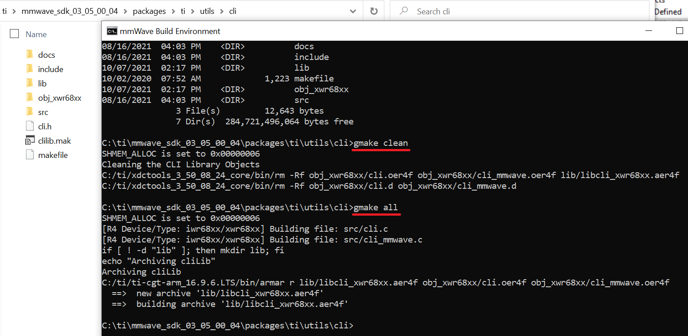
<p> The final step will be to go to CCS and rebuild the DSS project and then the MSS project for the Out of Box Demo Project. Lastly flash the newly generated binary onto the EVM. <br> <br> </p>
# Need More Help?
* Search for your issue or post a new question on the <a href="https://e2e.ti.com/support/sensors/f/sensors-forum" target="_blank">mmWave E2E forum</a>